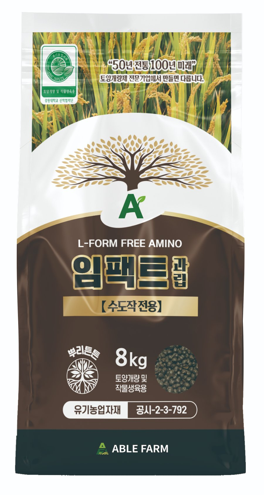

벼 깨씨무늬병 — 원인은 흙 속에 있습니다
한눈에 보기
- 증상: 잎에 깨알 같은 갈색 타원 반점(가운데 회백색, 노란 테두리). 이삭이 팬 뒤에는 벼알까지 번져 등숙·미질이 떨어집니다.
- 잘 생기는 논: 모래가 많은 사질답, 지력이 떨어진 노후화 논 — 유효규산·칼리가 부족한 논 학술 논문
- 잘 번지는 날씨: 7~8월 고온, 9월 잦은 비 농림축산식품부
- 관리 순서: 토양검정 → 규산질 토양개량(경운 전) → 칼리 균형 → 발생 초기 등록 약제 방제
2025년, 전국에서 크게 번졌습니다
농림축산식품부는 2025년 7~8월 이상고온과 9월의 잦은 강우로 전국 약 3만6천 ha에서 벼 깨씨무늬병이 발생했다고 밝히고, 이를 농업재해로 인정했습니다. 농림축산식품부 · 2025
증상 — 시기별로 이렇게 보입니다
| 시기 | 보이는 모습 |
|---|---|
| 7월 · 초기 | 잎에 작은 갈색 점이 드문드문 생깁니다. |
| 8월 · 확산 | 고온기에 반점이 늘고 서로 붙으며, 잎끝부터 누렇게 마릅니다. |
| 9월 · 이삭·벼알 | 이삭목과 벼알(겉껍질)에 갈색 얼룩이 생기고, 쭉정이가 늘어 등숙과 쌀 품질이 떨어집니다. |
왜 생기나 — 원인은 흙에 있습니다
깨씨무늬병은 곰팡이(Bipolaris oryzae)가 일으키지만, 어떤 논에서 심해지느냐는 토양이 크게 좌우합니다.
- 경북 상습발생지 조사에서 병은 양분 보유력이 낮고 양분이 쉽게 빠져나가며 유효규산 함량이 낮은 사질토양에서 주로 발생했고, 생육 후기 양분 결핍과 관련이 있었습니다. 학술 논문
- 병이 많은 논의 토양은 적은 논에 비해 유효인산·치환성칼륨·칼슘·마그네슘·유효규산이 현저히 낮았습니다. 학술 논문
- 국립식량과학원 연구진은 최근 재출현의 배경으로 기후변화와 함께 질소·규산·인산 등 양분 불균형과 지력 저하를 짚었습니다. 국립식량과학원 · 2025
규산이 중요한 이유
벼는 흙에서 흡수한 규산을 잎 표피 아래에 쌓아 유리 같은 규산층을 만듭니다. 이 층이 곰팡이가 잎 조직으로 뚫고 들어가는 길을 어렵게 하고, 잎과 줄기를 곧고 튼튼하게 합니다. 그래서 규산이 부족한 논일수록 병에 약해지기 쉽습니다.
농촌진흥청도 땅심이 낮은 논에는 규산질 비료 등 토양개량제를 투입하고, 토양검정 후 발급받은 「비료사용처방서」로 사용량을 확인하라고 안내합니다. 토양개량제 효과는 보통 3~4년 이어집니다. 농촌진흥청 · 2026
관리 순서
- 토양검정부터가까운 농업기술센터에 토양검정을 신청하고, 「비료사용처방서」로 규산·칼리가 얼마나 부족한지 확인합니다.
- 경운 전, 규산질 토양개량처방서에 맞춰 규산질 토양개량 자재를 경운 전에 고루 뿌리고 흙과 섞습니다. 상습발생 논일수록 우선입니다.
- 칼리 균형 맞추기병이 많은 논은 칼리도 부족한 경우가 많습니다. 처방서 기준으로 칼리를 함께 채웁니다.
- 발생 초기, 등록 약제로 방제반점이 보이기 시작하면 벼에 등록된 약제를 라벨에 적힌 대로 사용합니다. 토양개량은 방제를 대신하지 않습니다.
규산질 토양개량 자재 — 임팩트과립

임팩트과립
규산질 원료(베이직슬래그 — 규산 약 20%·석회 다량 함유)에 휴믹산·당밀·국내산 효소분해 아미노산을 담은 과립형 자재입니다. 알칼리성 규산질로 규산이 부족하고 산성으로 기운 논의 토양을 바로잡고, 벼 줄기를 튼튼하게 해 도복을 줄입니다.
- 쓰는 때
- 경운 전 기초 밑작업
- 수도작
- 8kg 한 포당 1,000~1,200평, 토양에 고루 뿌려 혼합
- 규격
- 2 · 6 · 8kg
- 주의
- 알칼리성 자재라 화학·유기질 자재와 섞어 뿌리지 마세요. pH 6.5 이상 토양에는 쓰지 않습니다.
꼭 알아두세요. 임팩트과립은 병을 치료하거나 막는 농약이 아닙니다. 깨씨무늬병이 잘 생기는 규산 부족·산성 논의 토양을 개량하는 자재이며, 발생한 병은 반드시 벼에 등록된 약제로 방제하세요. 사용량은 토양검정 처방서를 따르세요.
자주 묻는 질문
깨씨무늬병은 어떤 논에서 많이 생기나요?
모래가 많아 양분이 쉽게 빠져나가는 사질답, 지력이 떨어진 노후화 논에서 많이 생깁니다. 병이 많은 논은 유효규산·칼리 등이 부족한 경우가 많고, 7~8월 고온과 잦은 비가 겹치면 크게 번집니다.
규산은 깨씨무늬병 관리에 어떻게 도움이 되나요?
벼가 흡수한 규산은 잎 표피 아래 규산층이 되어 곰팡이 침입을 어렵게 하고 잎·줄기를 튼튼하게 합니다. 규산이 부족한 논은 토양검정 결과에 맞춰 규산질 자재로 먼저 보강하는 것이 기본입니다.
깨씨무늬병이 잦은 논의 토양개량에는 어떤 자재를 쓰나요?
토양검정 처방서에 따라 규산질 토양개량 자재를 경운 전에 넣습니다. 에이블팜 임팩트과립은 규산질 원료(베이직슬래그)와 휴믹산을 담은 유기농업자재(공시-2-3-792)로, 수도작은 8kg 한 포당 1,000~1,200평 기준입니다.
임팩트과립을 쓰면 깨씨무늬병이 생기지 않나요?
아니요. 임팩트과립은 토양을 바로잡아 벼를 튼튼하게 키우는 토양개량 자재이고, 병 방제용 농약이 아닙니다. 칼리 균형과 발생 초기 등록 약제 방제를 함께 해야 합니다.
근거 자료
- 농림축산식품부, 벼 깨씨무늬병 피해 농업재해 인정 (2025.10) — 관련 보도
- 농촌진흥청, 땅심 낮은 논 토양개량제(규산질비료 등) 투입·토양검정 권고 (2026.3) — 관련 보도
- 국립식량과학원 연구진, 기후변화·영양 스트레스와 벼 깨씨무늬병 재출현 리뷰, Research in Plant Disease 31(4) (2025)
- 벼 깨씨무늬병 발생의 환경요인 분석 — 경북 상습발생지 토양 조사 — KoreaScience
- 농사로(농촌진흥청 농업기술포털) 병해충 정보 — nongsaro.go.kr